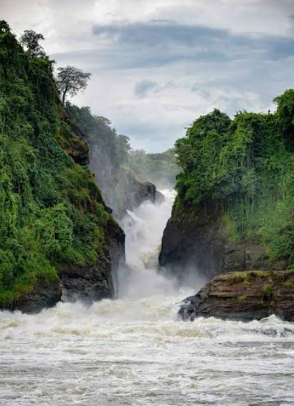

Welcome to Uganda
Welcome to Discover Uganda Tourism. Uganda is a beautiful country known for its wildlife, mountains, forests, lakes, rivers and cultural experiences.
Why Visit Uganda?
Uganda offers many exciting tourism experiences for visitors, including wildlife safaris, gorilla tracking, bird watching, hiking and cultural tourism.
Popular Activities
- Gorilla trekking
- Wildlife safaris
- Bird watching
- Mountain hiking
- Boat cruises
- Cultural tours
Featured Destination

Murchison Falls National Park is one of Uganda's famous tourism destinations and is known for its wildlife and spectacular Murchison Falls.